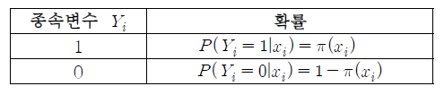
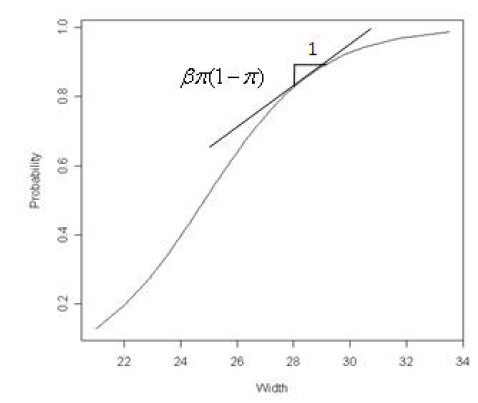
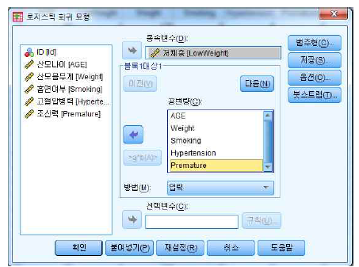
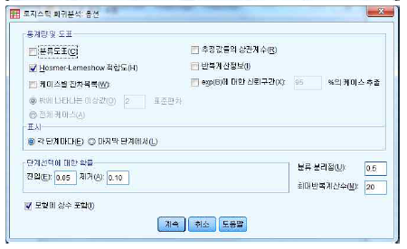
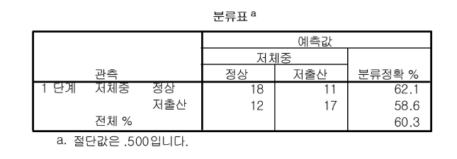
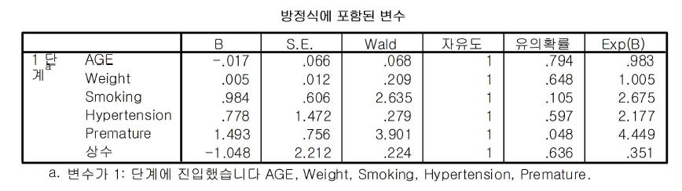

Chapter 12 로지스틱 회귀분석
앞 절의 선형회귀분석에서 종속변수는 연속적인 척도에서 측정된 양적인 변수라고 가정하였다. 때때로 종속변수가 질적인 변수로 취할 수 있는 변수의 값이 단지 두 가지밖에 없는 경우가 있다. 예를 들면, 특정 암이 발병할 여부를 분석할 수 있는 회귀모형을 설정하고자 할 때 영향을 미칠 수 있는 독립변수들로 흡연, 음주, 비만, 스트레스 등을 고려할 수 있을 것이다. 이때 종속변수는 암 발병여부를 구분할 수 있는 질적인 변수로 ‘양성’혹은 ‘음성’두 가지 값으로 표시할 수 있다.
일반적으로 종속변수가 취할 수 있는 값은 어떤 사건이 발생된 경우를 1로 하고, 발생되지 않은 경우를 0으로 표시될 수 있기 때문에, 종속변수는 연속적인 척도에서 측정된 변수가 아니고 이산형 변수가 된다. 이러한 경우 사용할 수 있는 분석방법이 로지스틱 회귀분석이다.
로지스틱 회귀분석에서의 로지스틱 회귀모형은 로짓(logit) 회귀모형이라고도 불리며, 종속변수가 명목형 또는 순서형인 경우 사용하는 통계적 기법이다. 일반적으로 종속변수가 두 개의 범주를 가지는 명목형 변수인 경우 사용된다.
종속변수가 0, 1 만의 값을 갖는 명목형 변수인 경우에 종속변수 는 두 가지 값만 취하는 베르누이 확률변수로 아래와 같은 확률분포를 가지게 된다.
- 종속변수에 대한 베르누이 확률분포

종속변수 \(Y\)의 기대값을 나타내는 반응함수는 S형 모양의 곡선을 그리는 경우가 실제로 많이 나타난다. 이 반응함수는 \(X\) 가 증가함에 따라 \(Y\)의 값이 1로 서서히 수렴하는 양상을 보인다. 이와 같은 함수를 로지스틱 함수(logistic function)라 부른다.

즉 로지스틱 회귀분석(logistic regression)이란 단지 두 개의 값만을 가지는 종속변수와 독립변수들 간의 인과관계를 로지스틱 함수를 이용하여 추정하는 통계기법이다.
로지스틱 회귀모형은 다음과 같다.
\[ \pi(x)=\frac{exp(\alpha+\beta x)}{1+exp(\alpha+\beta x)} \]
또는
\[ logit[\pi(x)]=log\frac{\pi(x)}{1-\pi(x)}=\alpha+\beta x \]
예제] 산모의 나이, 몸무게, 흡연여부, 고혈압병력, 조산병력이 저체중아 출산 여부(1=참여, 0=비참여)에 어떠한 영향을 미치는 지를 알아보고자 한다.
로지스틱 회귀분석을 실시하면
분석(A)
회귀분석(R)
이분형 로지스틱(G)
종속변수에 명목형 값을 가진 저체중 변수를 넣고, 공변량에 독립변수를 넣는다. 즉, 산모 나이, 몸무게, 흡연여부, 고혈압병력, 조산병력 등을 공변량에 넣는다.

옵션 창에서 Hosmer-Lemeshow 적합도(H)를 선택한다.
[결과 : Hosmer & Lemeshow 적합도 검정]
Hosmer & Lemeshow 적합도 검정은 로지스틱 회귀모형의 전체적인 적합도를 판단하는 검정이다. 이때 귀무가설은 모형이 적합하다 이기 때문에 유의확률이 유의수준보다 크면 좋은 모형이 된다. 여기서 유의확률은 0.429 이므로 모형이 적합하다고 할 수 있다.
[결과 : 분류표]

위 표는 로지스틱 회귀모형 적합결과를 이용한 분류표이다. 결과를 살펴보면 실제로 정상일 때 로지스틱 회귀분석으로 정상으로 예측한 케이스가 18인 경우고 실제 저출산인 경우 저출산으로 예측한 케이스가 17이다. 나머지 33 케이스는 정상인데 저출산으로 잘못 예측했거나 저출산인데 정상으로 잘못 예측한 경우이다. 따라서 이 로지스틱 회귀모형으로 예측할 경우 분류 정확도가 약 60.3%라는 것을 알 수 있다.
[결과 : 방정식에 포함되는 변수]

위의 표는 추정된 로지스틱 회귀계수와 유의성에 대한 결과를 보여주는 표이다. 이를 통해 적합된 로지스틱 회귀모형은 다음과 같다.
\[ logit(저체중아출산)=-1.048 -0.017*나이+0.005*몸무게+\\ 0.984*흡연여부+0.778*고혈압병력+1.493*저출산경험 \]
다음으로는 오즈비(Odds ratio)를 해석해야한다. 로지스틱 회귀분석은 기존의 회귀분석과는 다르게 회귀계수 를 직접 해석하지 않고 오즈비[Exp(B)]를 이용하여 해석하게 된다.
위의 결과에서 독립변수 흡연의 경우 “흡연자가 비흡연자에 비해 저체중아를 출산할 확률의 오즈가 2.675배 높다”라고 해석할 수 있다.